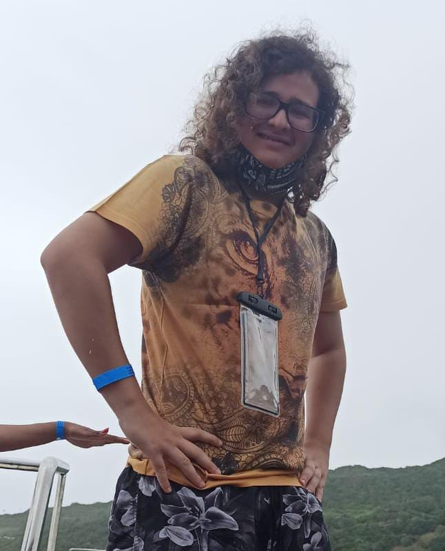
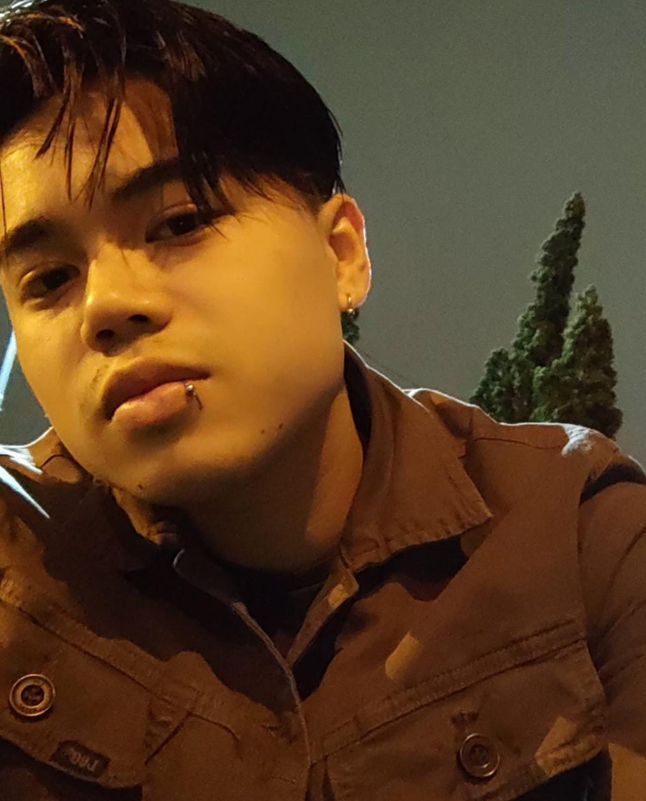
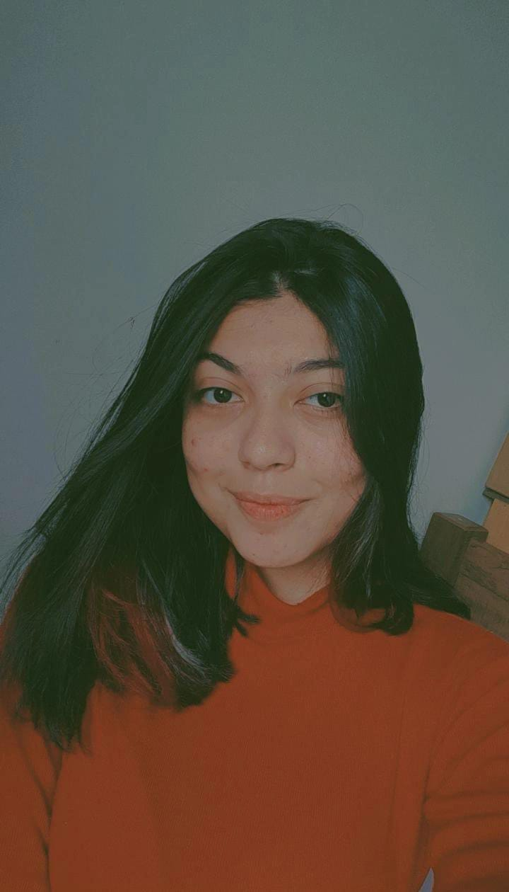

|
A ODS 6 tem como objetivo, garantir a disponibilidade e a gestão sustentável de água potável e do saneamento para todos. Tendo como metas, alcançar o acesso universal da água potável, melhorar a eficiência de seus usos, restaurar ecossistemas e muitos outros motivos. Observe que no Brasil, mais de 30 milhões de brasileiros não tem acesso a água. E ainda no mundo todo, que possuí uma população total quase chegando a 8 bilhões, 1 a cada 3 pessoas não tem acesso a água e mais da metade não possuí acesso ao saneamento. |
|
A equipe Coding To Far (C2FAR) tem como ideia central do projeto, criar uma plataforma web e aplicativo para o controle de locais com foco de dengue destinado a vigilância sanitária, mas também tendo uma faceta separada para o público geral. O objetivo do projeto é desenvolver um aplicativo onde os agentes de combate a epidemia (ACE) poderão marcar os locais com maior concentração de Dengue, com o mapa mostrando os locais com foco e níveis de intensidade em tempo real. O projeto atualmente está em fase de desenvolvimento, com três individuos ativos, que estão projetando o aplicativo e website, sendo eles, Emilly França, Gabriel Yoshimitsu e Henrique Taki. Atualmente a sigla M.A.R.D. significa Mapeamento de Área de Risco: Dengue. |
|  |  |  |
| Gabriel Yoshimitsu Idade: 19 anos Programador chefe |
Henrique Hideki Idade: 21 anos Design Principal |
Emilly França Idade: 18 anos Gerente geral |